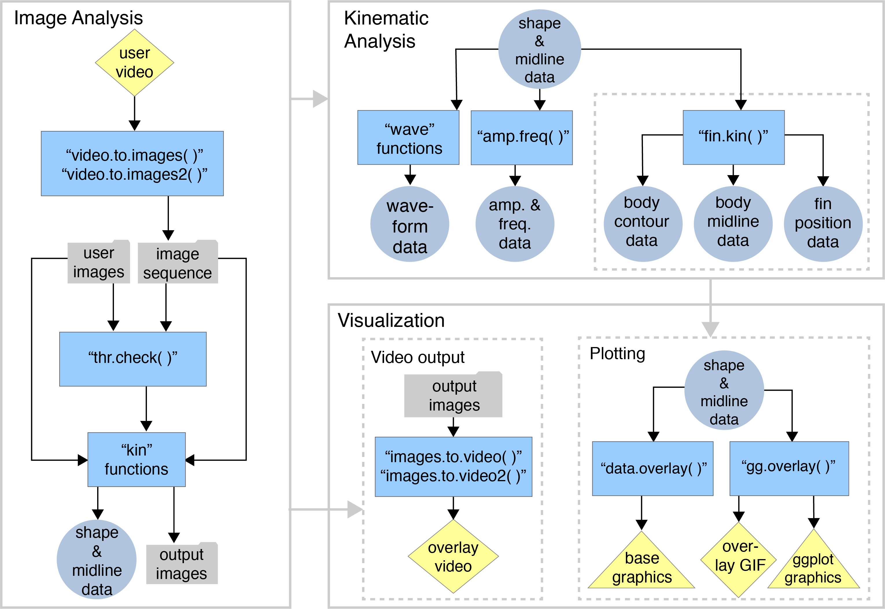
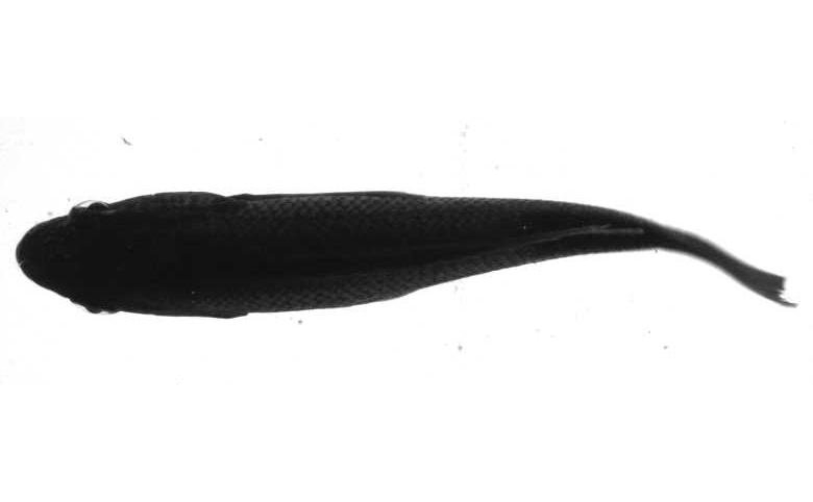
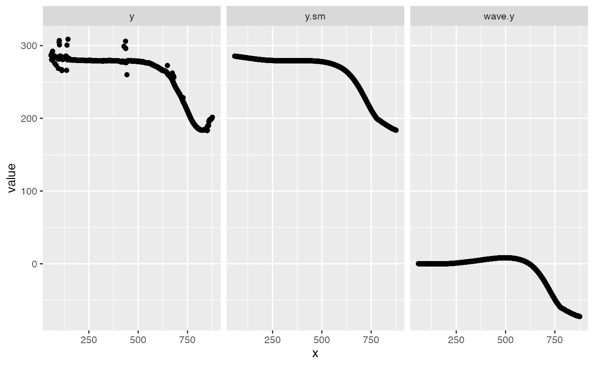
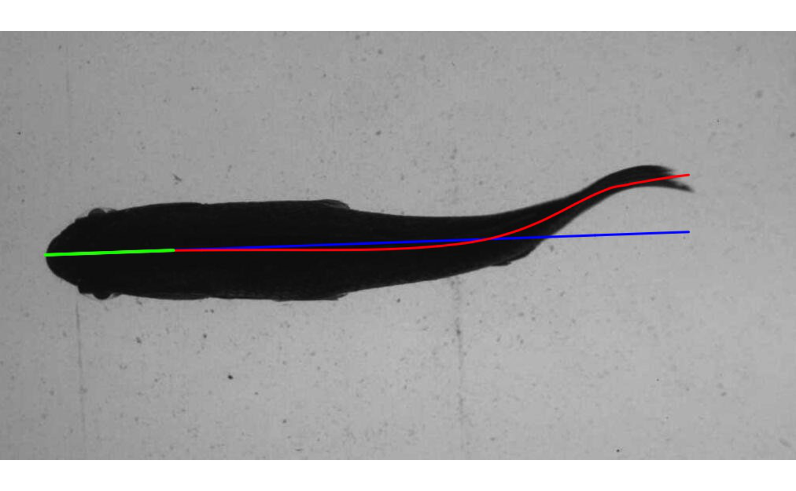

startup.RmdThe release version of trackter can be installed with:
install.packages("trackter")The current development version can be installed with:
require(devtools)
install_github("ckenaley/trackter")
require(trackter)The core functions of trackter that extract shape and contour data from images (the kin functions: kin.simple, kin.search, and kin.free) depend upon EBImage, available on the Bioconductor repository. The current build and development versions of trackter install this dependency. If it does not install, it can be done so easily with just a few lines of code:
if (!requireNamespace("BiocManager", quietly = TRUE))
install.packages("BiocManager")
BiocManager::install("EBImage")trackter also contains several functions for image and video processing. These functions depend on the popular FFmpeg package and it must be installed if the user intends to use them. Installation is platform-dependent. The FFmpeg wiki installation and compilation guide provides some great guidance here.

The workflow diagram above outlines how the functions within trackter may be used. Image analysis, whereby ROIs are detected and their shape information extracted, is the logical starting point. Users can begin with either a directory of images or a video. In the latter case, trackter’s image extraction functions may be used to establish a directory of images. The kin functions (kin.simple(), kin.search(), and kin.free()) perform the shape extraction, returning a series of tables for downstream kinematic analysis and visualization.
library(trackter)
library(ggplot2)
library(data.table)trackter was developed to analyze image data from videos of swimming organisms, although any object in an image field has potential for analysis. Here, we start by accessing an image of a swimming fish included with the package in a directory named “img” and displaying it.
i <- system.file("extdata/img","sunfish_BCF.jpg",package="trackter")
y <- EBImage::readImage(i)
EBImage::display(y,method="raster")
Here, kin.simple is used to extract contour and shape information from the image above by referring to the directory that contains it. An image with a midline overlay is saved to the working directory (see below).
dir <- system.file("extdata","img",package="trackter")
im <- list.files(system.file("extdata/img", package = "trackter"),full.names = TRUE)
im<- im[grepl("sunfish.jpg",im)]
im.dir <-paste0(getwd(),"/images")
dir.create(im.dir)
file.copy(im,paste0(im.dir,"/",basename(im)))## [1] TRUE
kin.y <- kin.simple(image.dir = im.dir,save=TRUE,out.dir = getwd())## Warning: `data_frame()` was deprecated in tibble 1.1.0.
## Please use `tibble()` instead.The kin functions in trackter return a list of data tables:
## $kin.dat
## [1] "data.table" "data.frame"
##
## $midline
## [1] "data.table" "data.frame"
##
## $cont
## [1] "data.table" "data.frame"
##
## $cont.sm
## [1] "data.table" "data.frame"
##
## $mid.pred
## [1] "data.table" "data.frame"
##
## $all.classes
## [1] "data.table" "data.frame"
##
## $dim
## [1] "integer"Most will be interested in the “kin.dat” and “midline” data for the calculation of body position parameters (e.g., amplitude, wavelength, etc.). For example, the “kin.dat” table includes, among other things, frame-specific trailing-edge (rightmost) amplitude (“x”, “y”), head (leftmost) position (“head.x”, “head.y”) which may be used to calculate position and trailing-edge amplitude.
print(kin.y$kin.dat)## frame roi x y head.x head.y amp head.pval
## 1: 0 a 868 198.8922 66 285.75 -72.60059 0.9967486The “midline” table is composed of frame-specific midline data, including, among other things, calculated midline position (“y”), smoothed midline position (“y.sm”) and midline position relative to the head (“wave.y”). Here we see the difference between them.
## frame roi n x y y.sm wave.y per.bl
## 1: 0 a 1 58 286.5000 285.5285 0.10847708 0.000000000
## 2: 0 a 2 59 287.3333 285.4907 0.10638200 0.001200104
## 3: 0 a 3 60 287.0000 285.4530 0.10433325 0.002400205
## 4: 0 a 4 61 280.7500 285.4153 0.10232499 0.003600305
## 5: 0 a 5 62 289.0000 285.3777 0.10035140 0.004800404
## 6: 0 a 6 63 286.5000 285.3401 0.09840665 0.006000501
ml <- melt(kin.y$midline[,.(x,y,y.sm,wave.y)],"x")
qplot(data=ml,x=x,y=value)+facet_wrap(variable~.)
When “save=TRUE”, the kin functions write images to a user-defined directory that include midline overlays.

#clean up
unlink(im.dir,recursive=TRUE)